In the video, you have learned that the inner_join() function of dplyr needs to be given a “key” on which two data frames are joined. Actually, multiple keys that need to match can be specified. In this first exercise, you are going to join two data sets by two keys. The data frames ilo_hourly_compensation and ilo_working_hours are already loaded for you and are available in your workspace.
This course touches on a lot of concepts you may have forgotten, so if you ever need a quick refresher, download the tidyverse Cheat Sheet and keep it handy!
library(tidyverse)library(data.table)load("ilo_working_hours.RData")load("ilo_hourly_compensation.RData")# Join both data framesilo_data <- ilo_hourly_compensation %>%inner_join(ilo_working_hours, by =c("country", "year"))# Count the resulting rowsilo_data %>%count()
# A tibble: 1 × 1
n
<int>
1 612
# Examine ilo_datailo_data %>%head()
# A tibble: 6 × 4
country year hourly_compensation working_hours
<chr> <chr> <dbl> <dbl>
1 Australia 1980.0 8.44 34.6
2 Canada 1980.0 8.87 34.8
3 Denmark 1980.0 10.8 31.9
4 Finland 1980.0 8.61 35.6
5 France 1980.0 8.90 35.4
6 Italy 1980.0 8.09 35.7
Change variable types
For displaying data in ggplot2 graphics, it is often helpful to convert all the variables to the right data type. Usually, categorical variables like country in this example should be converted to factors before plotting them. You can do so using as.factor(). In your data set, two columns are still of type “character” – use mutate() to turn them into factors.
# Turn year and country into a factorilo_data_corrected <- ilo_data %>%mutate(year =as.factor(as.integer(as.numeric(year))),country =as.factor(country))# See the resultsilo_data_corrected %>%head()
# A tibble: 6 × 4
country year hourly_compensation working_hours
<fct> <fct> <dbl> <dbl>
1 Australia 1980 8.44 34.6
2 Canada 1980 8.87 34.8
3 Denmark 1980 10.8 31.9
4 Finland 1980 8.61 35.6
5 France 1980 8.90 35.4
6 Italy 1980 8.09 35.7
Filter the data for plotting
Use the filter() function of dplyr to remove non-European countries. A vector called european_countries has been created that contains all European countries which should remain in the data set. Here, the %in% operator introduced in the video might come in handy. Note that only a subset of European countries for which enough data exist is retained. For instance, Poland is missing.
# Group and summarize the datailo_data %>%group_by(year) %>%summarise(mean_hourly_compensation =mean(hourly_compensation),mean_working_hours =mean(working_hours)) %>%head()
In this exercise, you will create a very basic scatter plot with ggplot2. This is mostly a repetition of stuff you’ve learnt in the prerequisites for this course, so it should be easy for you.
# Filter for 2006plot_data <- ilo_data %>%filter(year ==2006)# Create the scatter plotggplot(plot_data) +geom_point(aes(x = working_hours, y = hourly_compensation))
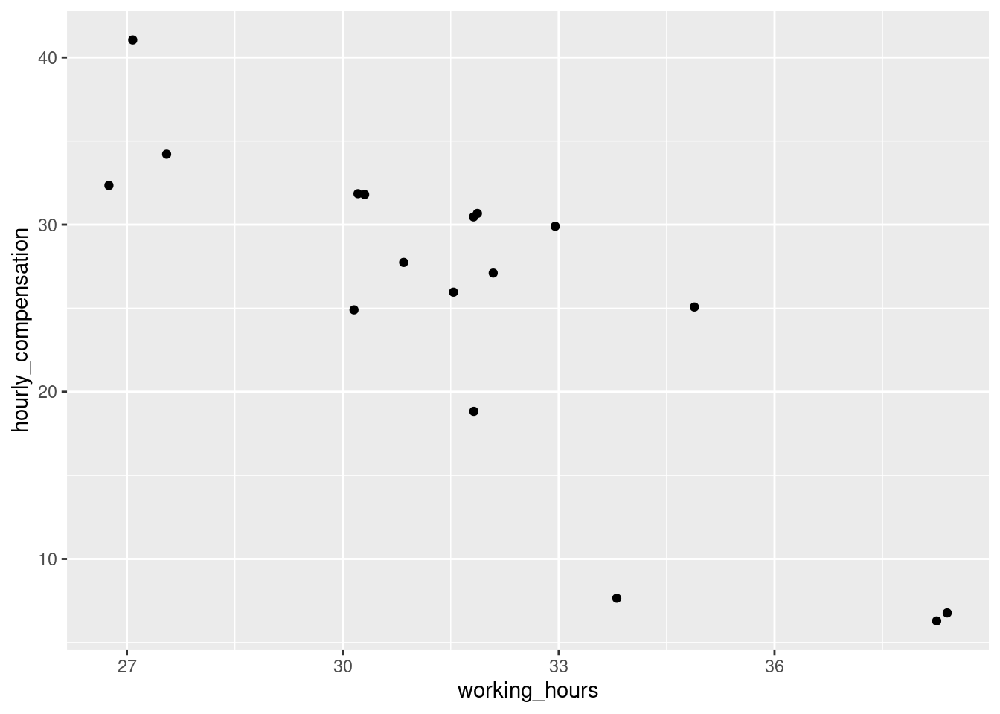
Add labels to the plot
As mentioned in the video, you’re going to enhance the plot from the previous exercise by adding a title, a subtitle, and a caption to the plot as well as giving the axes meaningful names. You’re going to use the labs() function to do this – try using ?labs in the console to see the available options.
# Create the plotilo_plot <-ggplot(plot_data) +geom_point(aes(x = working_hours, y = hourly_compensation)) +# Add labelslabs(x ="Working hours per week",y ="Hourly compensation",title ="The more people work, the less compensation they seem to receive",subtitle ="Working hours and hourly compensation in European countries, 2006",caption ="Data source: ILO, 2017" )ilo_plot
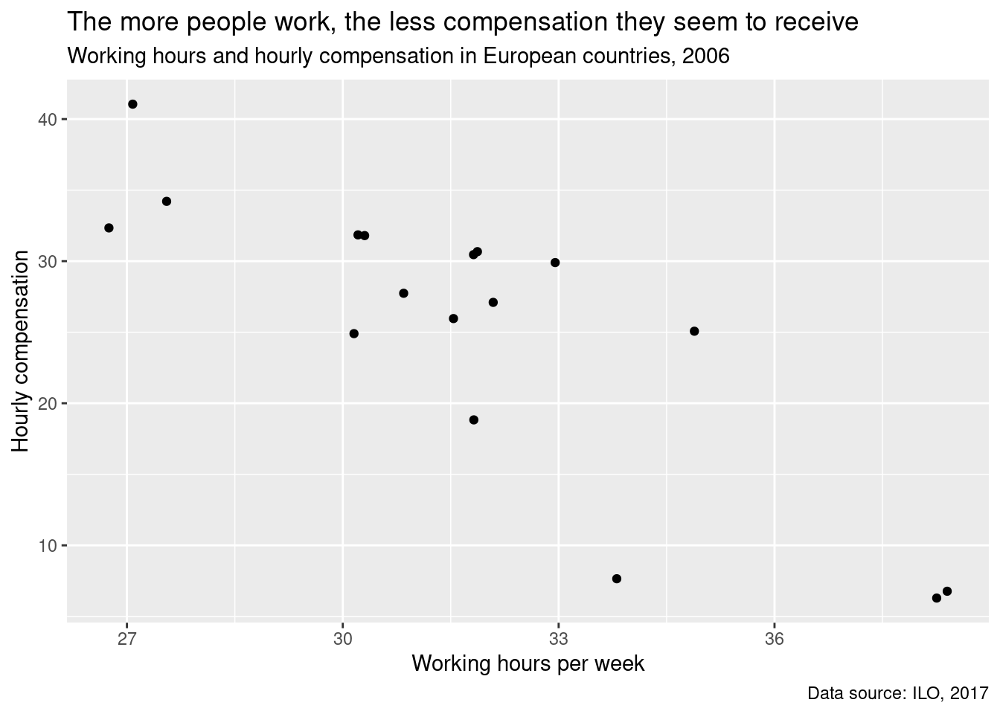
Apply a default theme
As you’ve learnt in the videos, ggplot2 comes with a set of predefined themes. Try out some of them!
# Add a different themeilo_plot +theme_minimal()
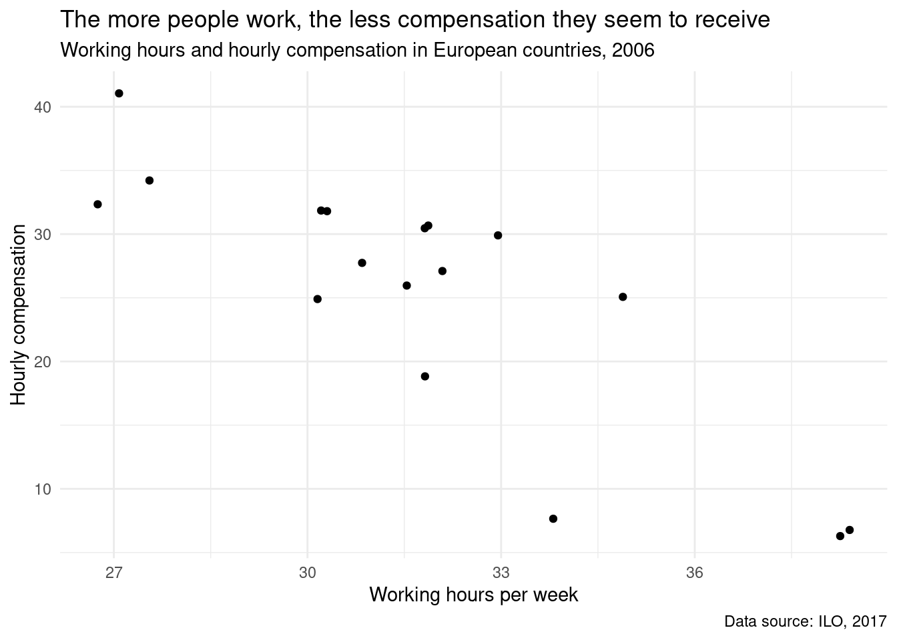
Change the appearance of titles
Besides applying defined theme presets, you can tweak your plot even more by altering different style attributes of it. Hint: You can reuse and overwrite the ilo_plot variable generated in the previous exercise – the current plot is already shown in the window on the right.
ilo_plot <- ilo_plot +theme_minimal() +# Customize the "minimal" theme with another custom "theme" calltheme(text =element_text(family ="Bookman"),title =element_text(color ="gray25"),plot.caption =element_text(color ="gray30"),plot.subtitle =element_text(size =12) )# Render the plot objectilo_plot
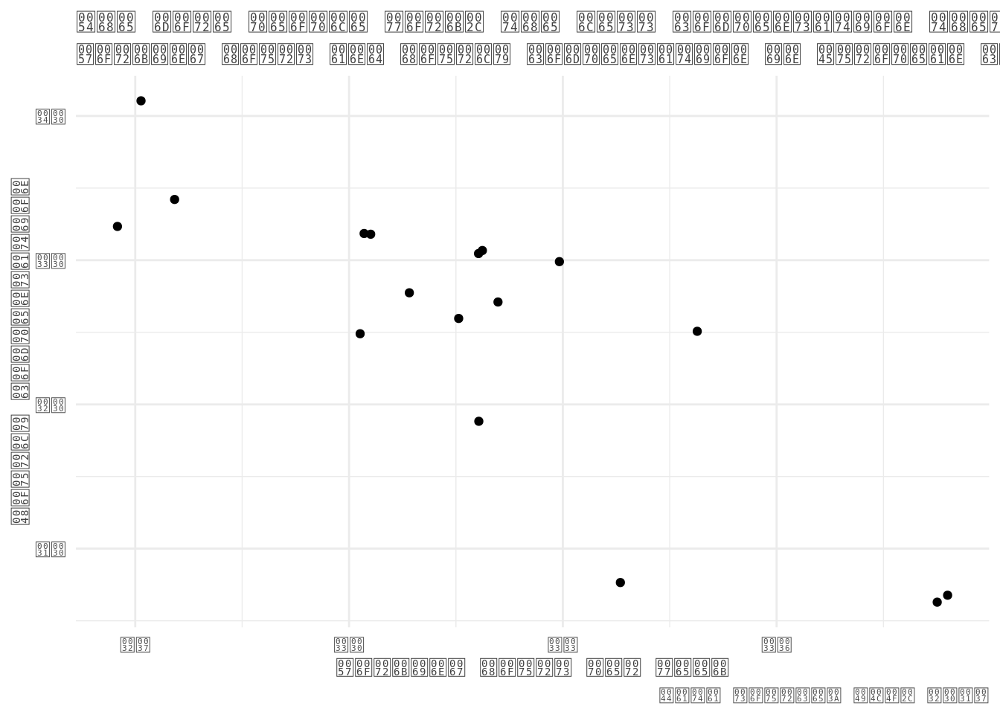
Alter background color and add margins
Further customize the look of your plot with more arguments to the theme function call. You can continue working on your ilo_plot object created in the last exercise.
Change the overall background color of your plot to “gray95”.
This time, another function than element_text is needed – one for rectangular plot elements. Rewatch the video to know which.
Add margins to the plot: 5mm top and bottom, 10mm to the left and the right.
The margins need to be specified in the following order: top, right, bottom, and left.
ilo_plot +# "theme" calls can be stacked upon each other, so this is already the third call of "theme"theme(plot.background =element_rect(fill ="gray95"),plot.margin =unit(c(5, 10, 5, 10), units ="mm") )
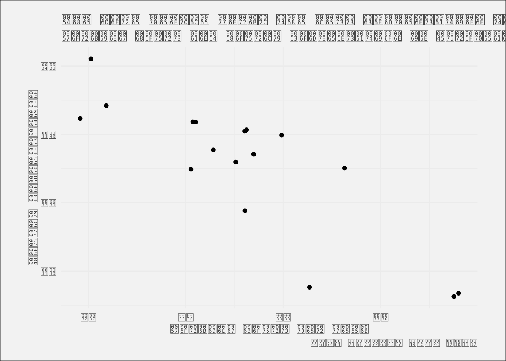
Prepare the data set for the faceted plot
You’re now going to prepare your data set for producing the faceted scatter plot in the next exercise, as mentioned in the video. For this, the data set needs to contain only the years 1996 and 2006, because your plot will only have two facets. ilo_data has been pre-loaded for you.
# Filter ilo_data to retain the years 1996 and 2006ilo_datap <- ilo_data %>%filter(year ==1996| year ==2006)# Again, you save the plot object into a variable so you can save typing later onilo_plot <-ggplot(ilo_datap, aes(x = working_hours, y = hourly_compensation)) +geom_point() +labs(x ="Working hours per week",y ="Hourly compensation",title ="The more people work, the less compensation they seem to receive",subtitle ="Working hours and hourly compensation in European countries, 2006",caption ="Data source: ILO, 2017" ) +# Add facets herefacet_grid(.~year)ilo_plot
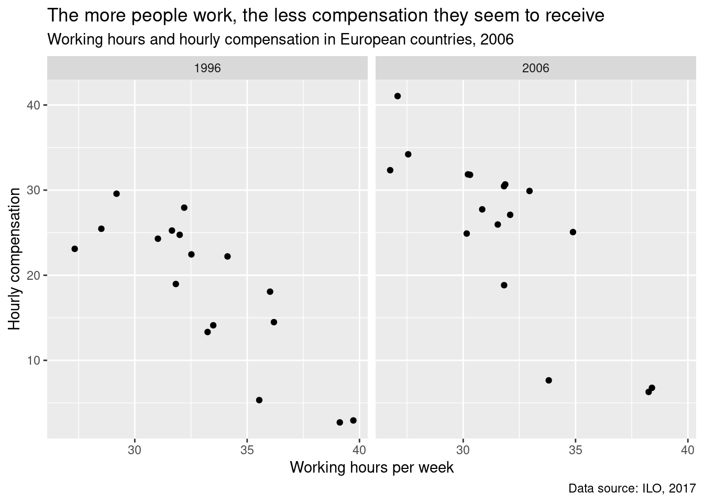
Define your own theme function
In the video you saw how a lot of typing can be saved by replacing code chunks with function calls. You saw how a function is usually defined, now you will apply this knowledge in order to make your previous two theme() calls reusable.
# Define your own theme function belowtheme_ilo <-function() {theme_minimal() +theme(text =element_text(family ="Bookman", color ="gray25"),plot.subtitle =element_text(size =12),plot.caption =element_text(color ="gray30"),plot.background =element_rect(fill ="gray95"),plot.margin =unit(c(5, 10, 5, 10), units ="mm") )}
Apply the new theme function to the plot
Once you have created your own theme_ilo() function, it is time to apply it to a plot object. In the video you saw that theme() calls can be chained. You’re going to make use of this and add another theme() call to adjust some peculiarities of the faceted plot.
# Apply your theme function (dont't forget to call it with parentheses!)ilo_plot <- ilo_plot +theme_ilo()# Examine ilo_plotilo_plot
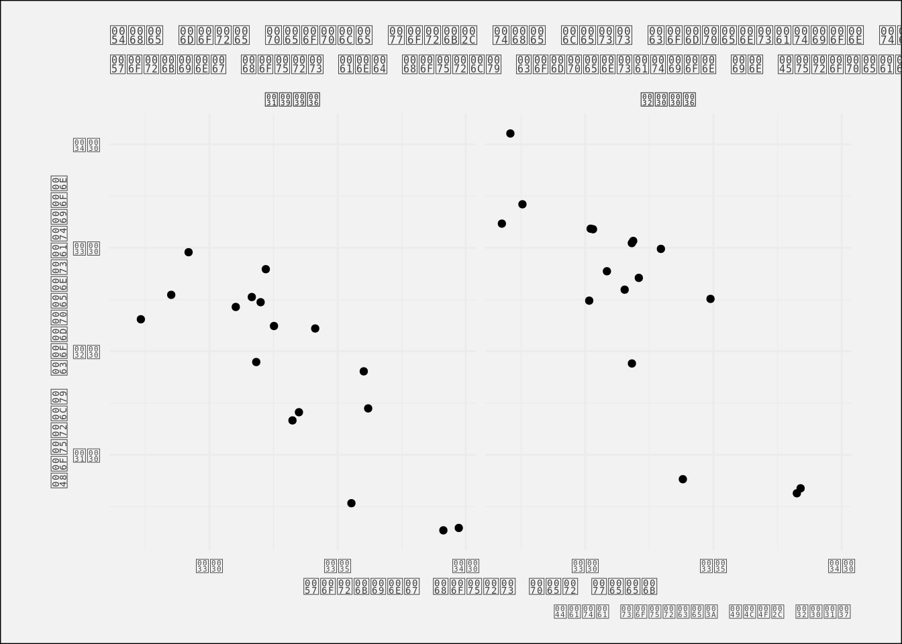
ilo_plot +# Add another theme calltheme(# Change the background fill and colorstrip.background =element_rect(fill ="gray60", color ='gray95'),# Change the color of the textstrip.text =element_text(color ="white") )
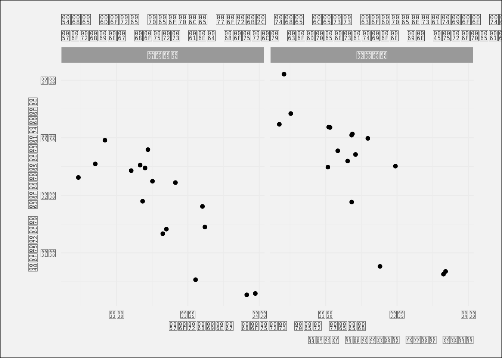
A basic dot plot
As shown in the video, use only geom_path() to create the basic structure of the dot plot.
# Create the dot plotggplot(ilo_datap, aes(working_hours, country))+geom_path()
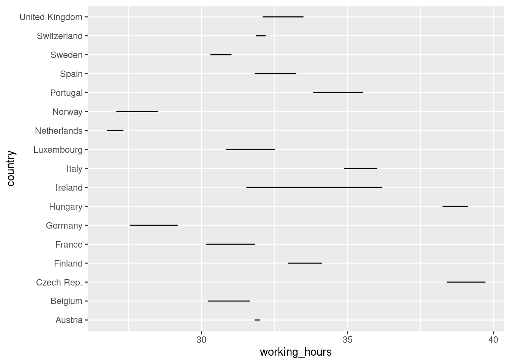
Add arrows to the lines in the plot
Instead of labeling years, use the arrow argument of the geom_path() call to show the direction of change. The arrows will point from 1996 to 2006, because that’s how the data set is ordered. The arrow() function takes two arguments: The first is length, which can be specified with a unit() call, which you might remember from previous exercises. The second is type which defines how the arrow head will look.
ggplot(ilo_datap) +geom_path(aes(x = working_hours, y = country),# Add an arrow to each patharrow =arrow(length =unit(1.5, "mm"), type ="closed"))
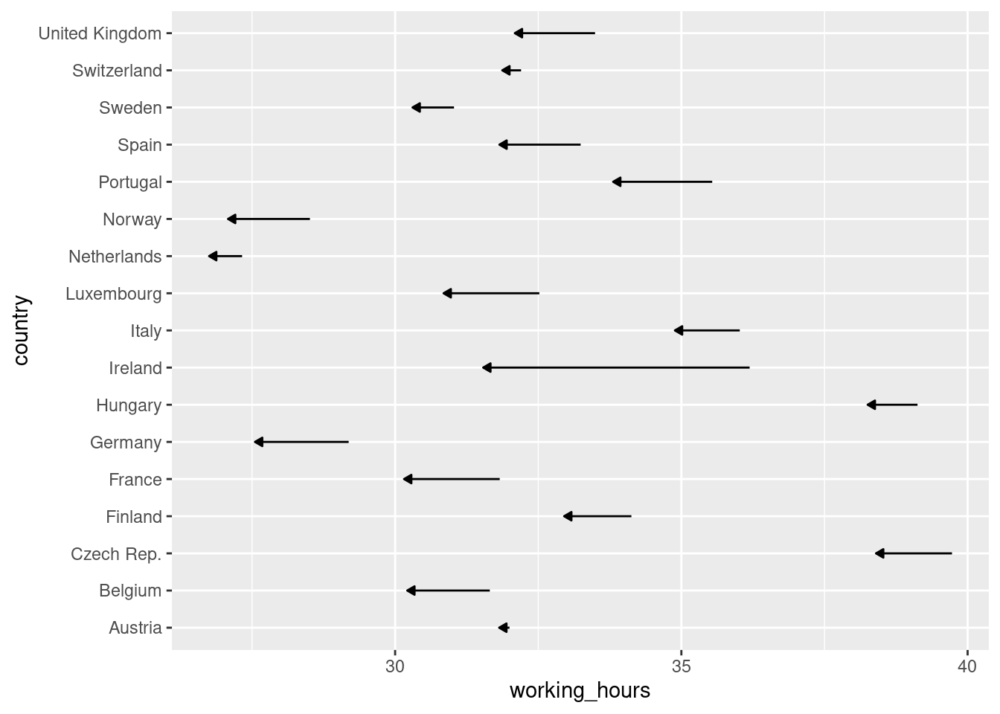
Add some labels to each country
A nice thing that can be added to plots are annotations or labels, so readers see the value of each data point displayed in the plot panel. This often makes axes obsolete, an advantage you’re going to use in the last exercise of this chapter. These labels are usually added with geom_text() or geom_label(). The latter adds a background to each label, which is not needed here.
ggplot(ilo_datap) +geom_path(aes(x = working_hours, y = country),arrow =arrow(length =unit(1.5, "mm"), type ="closed")) +# Add a geom_text() geometrygeom_text(aes(x = working_hours,y = country,label =round(working_hours, 1)) )
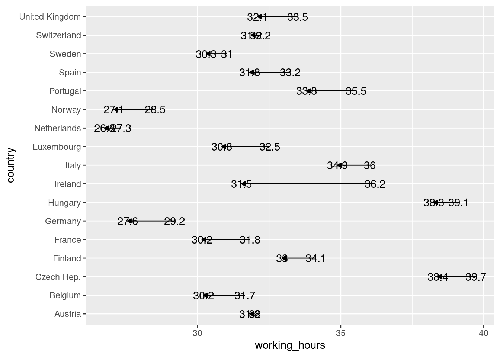
Reordering elements in the plot
As shown in the video, use mutate() and fct_reorder() to change the factor level ordering of a variable.
ilo_datap <- ilo_datap %>%mutate(country =as.factor(country))library(forcats)# Reorder country factor levelsilo_datap <- ilo_datap %>%# Arrange data framearrange(year) %>%# Reorder countries by working hours in 2006mutate(country =fct_reorder(country, working_hours, last))# Plot againggplot(ilo_datap) +geom_path(aes(x = working_hours, y = country),arrow =arrow(length =unit(1.5, "mm"), type ="closed")) +geom_text(aes(x = working_hours,y = country,label =round(working_hours, 1)) )
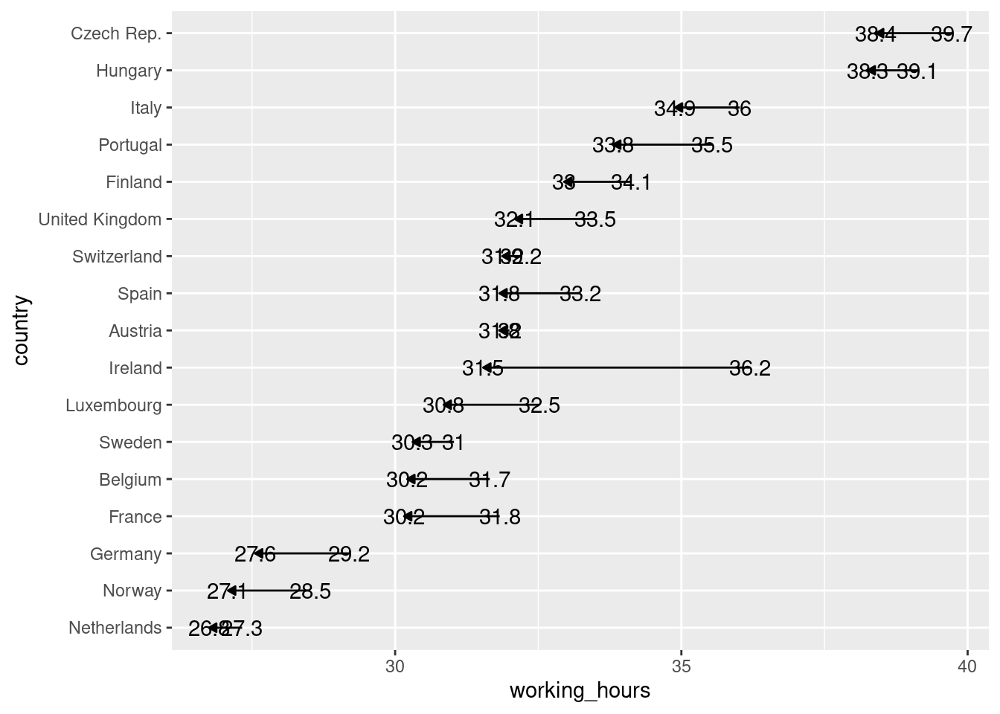
Correct ugly label positions
The labels still kind of overlap with the lines in the dot plot. Use a conditional hjust aesthetic in order to better place them, and change their appearance.
# Save plot into an object for reuseilo_dot_plot <-ggplot(ilo_datap) +geom_path(aes(x = working_hours, y = country),arrow =arrow(length =unit(1.5, "mm"), type ="closed")) +# Specify the hjust aesthetic with a conditional valuegeom_text(aes(x = working_hours,y = country,label =round(working_hours, 1),hjust =ifelse(year =="2006", 1.4, -0.4) ),# Change the appearance of the textsize =3,family ="Bookman",color ="gray25" )ilo_dot_plot
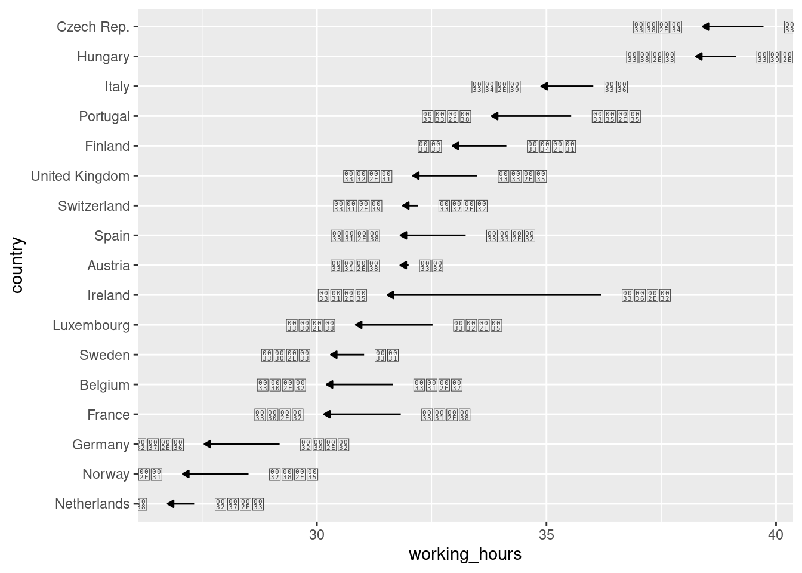
Change the viewport so labels don’t overlap with plot border
Use a function introduced in the previous video to change the viewport of the plotting area. Also apply your custom theme.
# Reuse ilo_dot_plotilo_dot_plot <- ilo_dot_plot +# Add labels to the plotlabs(x ="Working hours per week",y ="Country",title ="People work less in 2006 compared to 1996",subtitle ="Working hours in European countries, development since 1996",caption ="Data source: ILO, 2017" ) +# Apply your themetheme_ilo() +# Change the viewportcoord_cartesian(xlim =c(25, 41))# View the plotilo_dot_plot
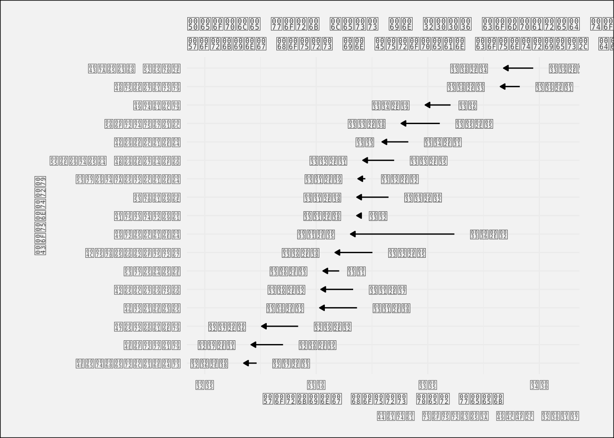
Optimizing the plot for mobile devices
The x-axis title is already quite superfluous because you’ve added labels for both years. You’ll now add country labels to the plot, so all of the axes can be removed.
In this exercise, you’re going to encounter something that is probably new to you: New data sets can be given to single geometries like geom_text(), so these geometries don’t use the data set given to the initial ggplot() call. In this exercise, you are going to need this because you only want to add one label to each arrow. If you were to use the original data set ilo_data, two labels would be added because there are two observations for each country in the data set, one for 1996 and one for 2006.
# Compute temporary data set for optimal label placementmedian_working_hours <- ilo_datap %>%group_by(country) %>%summarize(median_working_hours_per_country =median(working_hours)) %>%ungroup()# Have a look at the structure of this data setstr(median_working_hours)